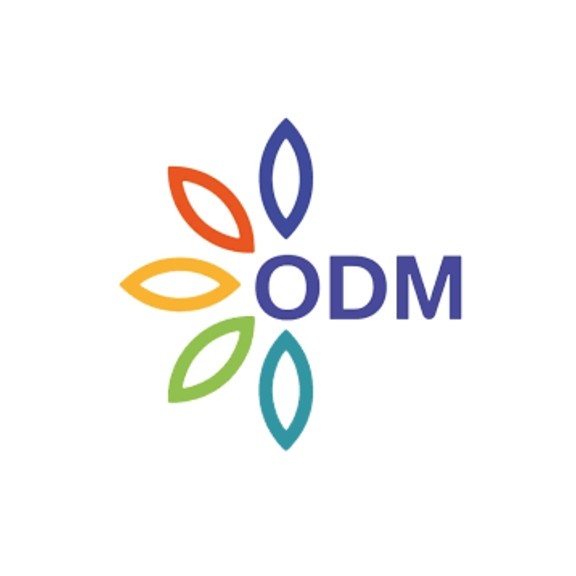

AMTI, ou Alfa Maroc Tech Industrie, est une entreprise industrielle marocaine de référence, fondée en 2020 en réponse à la pandémie de COVID-19.
Notre vision va bien au-delà de la simple fabrication : nous innovons pour transformer le paysage industriel local et international.
Forte de ses infrastructures modernes et de son expertise technique, AMTI s’est imposée comme un acteur clé dans la conception et la fabrication de
solutions sur mesure pour les secteurs médicaux et industriels. Nos installations intègrent des procédés avancés, garantissant une qualité et une durabilité
qui répondent aux exigences les plus strictes.
En 2024, nous intensifions notre développement à l’échelle nationale, visant une présence accrue sur tout le territoire marocain. Mais notre ambition
ne s’arrête pas là : en 2025, nous amorçons une diversification stratégique en nous tournant vers le secteur ferroviaire et d’autres industries de pointe,
dans une démarche résolument tournée vers l'innovation et l'expansion internationale.
AMTI ne se contente pas de produire : nous façonnons l'avenir de l'industrie avec passion et expertise. Que ce soit dans la conception, la maintenance
ou le développement de nouvelles solutions, notre engagement reste le même : repousser les limites de l'excellence et inspirer la confiance de nos
partenaires et clients, au Maroc et au-delà.
Fondation de la société AMTI en réponse à la pandémie de COVID-19.
Développement des équipements médicaux innovants et de haute qualité.
Élargissement de sa gamme de produits.
Investissement dans la recherche pour développer des produits innovants,
tels que des lits d'hôpitaux.
Expansion à travers tout le territoire marocain avec un fort accroissement des activités.
Diversification stratégique vers l'industrie ferroviaire et d'autres secteurs industriels.
AMTI, depuis sa fondation, a affirmé son rôle de pilier de l'industrie marocaine. Forte de son expertise et
de son engagement envers
l'innovation, la qualité et la souveraineté industrielle, AMTI a su établir des standards d'excellence.
Nos performances exceptionnelles,
illustrées par nos chiffres clés, témoignent de notre capacité à répondre aux exigences des
professionnels de la santé, tout en élargissant
notre impact à d'autres secteurs industriels stratégiques.
AMTI se donne pour mission d'aller toujours de l'avant et de renforcer la souveraineté industrielle du Maroc à l'échelle mondiale. Nous
nous engageons à faire du Royaume un acteur incontournable de l'industrie, à travers des solutions innovantes et une vision audacieuse.
Que ce soit dans le secteur médical, où nous garantissons des dispositifs de pointe pour améliorer les infrastructures de santé, ou dans
le secteur ferroviaire, où nous apportons des solutions stratégiques, notre ambition est de laisser une empreinte durable. Nous nous
efforçons d'élever les standards industriels, en plaçant l'innovation et la qualité au cœur de nos actions.
À travers notre expertise, notre engagement et nos infrastructures modernes, AMTI aspire à positionner le Maroc comme un leader
industriel sur la scène internationale, tout en construisant un avenir marqué par l'indépendance et l'excellence.
Des valeurs au cœur de notre mission :
AMTI fonde ses actions sur des valeurs fortes, véritables
piliers de notre engagement.
Ces valeurs reflètent notre quête
constante d'excellence, de qualité et d'innovation, tout en
mettant en avant la production locale
et l'ambition de faire du
Maroc un acteur majeur de l'industrie mondiale. Notre priorité
est d'apporter des solutions fiables et adaptées, laissant une
empreinte durable dans chaque secteur que nous touchons.
Des valeurs au cœur de notre mission :
Depuis sa création, AMTI a collaboré avec des organisations, institutions et entreprises de premier plan dans plusieurs secteurs clés,
renforçant ainsi sa position d’acteur incontournable sur le territoire marocain.
Grâce à son expertise et à son engagement,
AMTI vise également à étendre sa portée à l'échelle internationale.
Secteur Mèdical
AKDITAL Cheikh Khalifa Oncologie et Diagnostic du Maroc
Hôpital Privé de Tanger
Hôpital Universitaire International Cheikh Khalifa
Centre médical international de FES
Hôpital Privé de Salé
Clinique Internationale de Mohammedia
Hôpital privé Casablanca Ain Sebaa
Clinique du Bien-Être Bouskoura
Clinique de Spécialités de Safi
Centre régional d'oncologie de Béni Mellal
Secteur Ferroviaire
Références à venir prochainement...